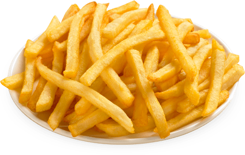

La Recetica del Día
Receta de patatas fritas caseras

Ingredientes
- 3 ó 4 Patatas (300g.)
- 4 Dientes de ajo
- Aceite de oliva
- Sal
Elaboración (Pasos)
- Calentar aceite en una sartén.
- Añadir las patatas cortadas, la sal y los ajos.
- Freír al gusto.
- Servir en plato.
Los cochecicos del día
| MODELO |
COLOR |
FOTO |
| Ferrary 458 |
Rojo |
|
| Porsche |
Gris Orcuro |
|
| Lamborgini Huracán |
Amarillo |
|
|
Verde |
|